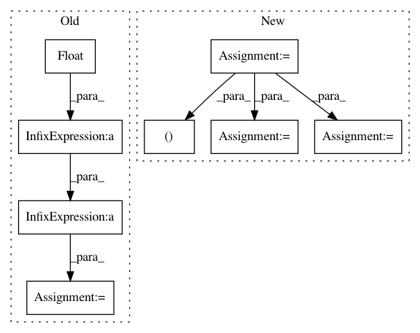

8a14792ce316b5d329650735ab78398e607f4124,qucumber/observables/observable.py,Observable,statistics,#Observable#Any#Any#Any#Any#Any#,103
Before Change
running_sum += samples.sum().item()
running_sum_of_squares += samples.pow(2).sum().item()
N = float(num_time_steps * num_chains) // total number of samples
mean = running_sum / N
variance = running_sum_of_squares - ((running_sum ** 2) / N)
variance /= N - 1
std_error = np.sqrt(variance / N)
After Change
running_mean = 0.0
running_variance = 0.0
running_length = 0
chains = None
num_chains = num_chains if num_chains != 0 else num_samples
num_time_steps = int(np.ceil(num_samples / num_chains))
for i in range(num_time_steps):
num_gibbs_steps = burn_in if i == 0 else steps
chains = nn_state.sample(
num_samples=num_chains,
k=num_gibbs_steps,
initial_state=chains,
overwrite=True,
)
samples = self.apply(nn_state, chains).data
current_mean = samples.mean().item()
current_variance = samples.var().item()
running_mean, running_variance, running_length = self._update_statistics(
running_mean,
running_variance,
running_length,
current_mean,
current_variance,
num_chains,
)
N = running_length // total number of samples
std_error = np.sqrt(running_variance / N)
In pattern: SUPERPATTERN
Frequency: 3
Non-data size: 8
Instances
Project Name: PIQuIL/QuCumber
Commit Name: 8a14792ce316b5d329650735ab78398e607f4124
Time: 2018-08-17
Author: emerali@users.noreply.github.com
File Name: qucumber/observables/observable.py
Class Name: Observable
Method Name: statistics
Project Name: SpiNNakerManchester/sPyNNaker
Commit Name: ef3b051ba0dc69a02f0d7aa8e955bea26b334f51
Time: 2020-09-30
Author: alan.barry.stokes@gmail.com
File Name: spynnaker/pyNN/utilities/bit_field_utilities.py
Class Name:
Method Name: get_estimated_sdram_for_bit_field_region
Project Name: acoular/acoular
Commit Name: 3d5e54b8d683ab0a18210b8d27add5fa35dcb81d
Time: 2018-01-16
Author: tom.j.gensch@campus.tu-berlin.de
File Name: acoular/fbeamform.py
Class Name: BeamformerFunctional
Method Name: calc